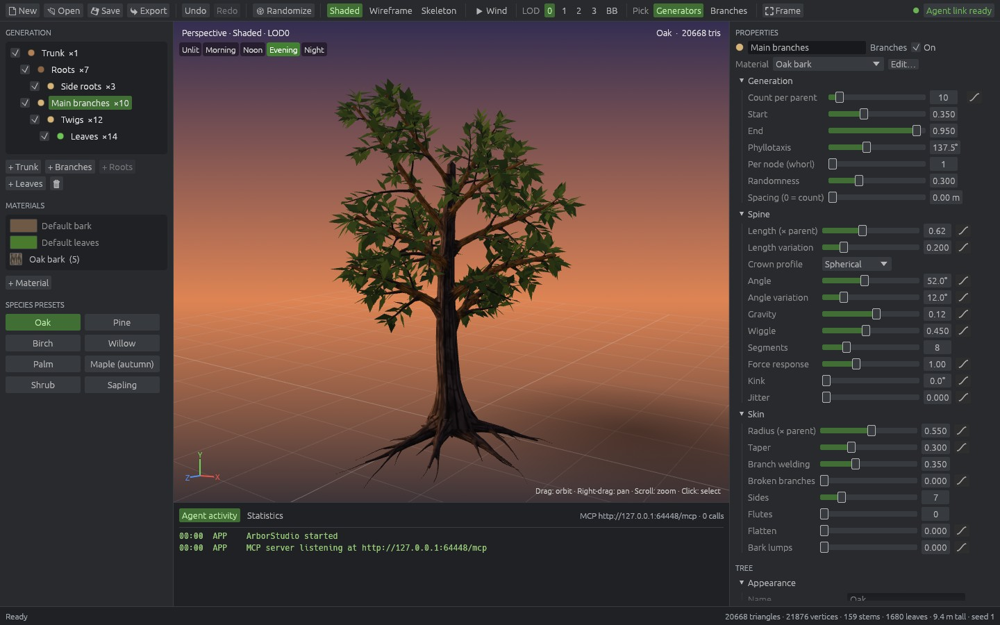

Tree editor for games · v0.1.0
Game-ready trees. Ready for your favorite AI agent.
ArborStudio is a desktop editor that grows trees from trunk, branch, root and leaf generators and exports them as GLB or OBJ with four LODs, a billboard and wind weights. Every operation in the editor is also an MCP tool, so Claude Code or another MCP client can make the twelve variants you need while you do something else.
Free and open source. MIT licence. Written in Rust.

For game developers and environment artists who need many distinct trees and would rather script them than click out each one.
01An agent session, start to finish
Twelve birches for a northern forest, from one prompt.
A session run against v0.1.0 while writing this page: the prompt, the calls, and what came out. Long results are cut, nothing else is edited.
-
AYou ask
Make 12 birch variants for a northern forest. Narrower crowns, a little early autumn colour. GLB with all LODs and billboards.
-
BThe agent calls ArborStudio
load_preset {"name": "Birch"} update_generator {"id": 2, "params": {"length": 0.36, "angle": 32}} update_generator {"id": 3, "params": {"gravity": 0.7}} update_settings {"autumn": 0.15, "leaf_color_variation": 0.3} get_stats {"all_lods": true} → lod0: 35,520 triangles, 13.3 m tall 116 ms export_variations {"count": 12, "format": "glb", "include_lods": true, "include_billboard": true} → Birch_v01.glb … Birch_v12.glb 1,434 ms + 12 billboard atlas PNGs
-
CYou get
- Birch_v01.glb
- Birch_v02.glb
- Birch_v03.glb
- …
- Birch_v12.glb
+ 12 billboard atlas PNGs
1,434 msFor all twelve

[TODO: screen recording of a real agent session, prompt → MCP calls → trees in the viewport. The calls above were sent by a script written for this page, not a chat client. Also: which MCP clients were tested.]
Connect your agent
Download ArborStudio, then connect your agent with one command:
02What ends up in the file
Four LODs, a billboard and wind weights, in one GLB.
Lower levels keep the skeleton and coarsen the mesh around it, so the outline holds when the engine switches. The billboard is the tree rendered from eight sides into one 4 × 2 atlas.


Triangles per level, Oak preset, seed 1.
- Wind
- Two weights per vertex in
TEXCOORD_1(UV2).xis branch sway, from 0 at the ground to 1 at the crown tips.yis leaf flutter. Your vertex shader applies them; ArborStudio doesn't ship an engine shader. - Vertex colour
COLOR_0carries tint, per-leaf variation, autumn colour and baked ambient occlusion. Multiply it with the texture.- Materials
- Colour textures, normal maps and alpha-cutout leaf cards.
- Formats
- GLB, OBJ with MTL, or JSON with every stem as points and radii for your own tools. Meshes are named
Oak_LOD0toOak_LOD4. - Collision
- Convex hulls, named
UCX_for Unreal or-convcolonlyfor Godot if you pick it. - Engines
- The docs walk through the import into Unity, Unreal and Godot. [TODO: engines tested, with versions]

03Every part has its own controls
A stack of generators, each with its own sliders.
Trunk, branches, twigs, roots and leaves are separate generators. Each one has its own settings, and most of them can follow a curve along the parent: longer branches low in the crown, steeper ones at the top.
- Trunk
- Roots
- Branches
- Twigs
- Leaves
- Count per parent
- Phyllotaxis
- Length (× parent)
- Crown profile
- Angle
- Gravity
- Wiggle
- Kink
- Taper
- Branch welding
- Broken branches
- Flutes
- Bark lumps
- Leaf fold
- Age
- Autumn
- Fallen leaves
- Ambient occlusion
Time to grow one tree1
| Preset | Triangles | LOD0 | All 5 levels | Relative time |
|---|---|---|---|---|
| Oak | 21k | 17 ms | 103 ms | |
| Birch | 36k | 24 ms | 112 ms | |
| Willow | 41k | 42 ms | 223 ms | |
| Pine | 75k | 96 ms | 404 ms |
Short enough that the viewport keeps up while you drag a slider.
[TODO: 10 to 20 s loop of a tree regenerating while a slider moves]
[TODO: wind animation loop]
04ArborStudio and SpeedTree
SpeedTree does more. Here is where ArborStudio differs.
SpeedTree is the reference for game vegetation and has far more features. ArborStudio is younger and smaller, and it adds features when people ask for them.
| Aspect | ArborStudio | SpeedTree |
|---|---|---|
| Agent access | MCP server with 35 tools, over HTTP or stdio, with or without a window | No such interface |
| Price | Free, no seat limits | Paid licence |
| Source | MIT. Read and change the generator. | Closed |
| Features | Smaller set, grows from requests | Larger and more mature |
Not for you if
- you need a hand-sculpted hero tree for a cinematic,
- you need SpeedTree's full feature set today,
- you work in a film or VFX pipeline.
[TODO: confirm this list]
Known Rough edges in v0.1.0
- The macOS build isn't notarised yet. macOS asks you once to allow it under System Settings › Privacy & Security.
- Variations ignore hand edits to single branches.
[TODO: 5 to 10 real quotes from game developers about making trees, SpeedTree licensing and hand-modelled vegetation]
[TODO: founder note, 2 to 4 sentences, first person, signed with a real name]
05Download
v0.1.0 for macOS, Windows and Linux.
Download v0.1.0The help has 22 pages with pictures, from a first tree to the full parameter reference. F1 in the app opens it. Read the docs →
- macOS 11 or laterApple silicon and IntelArborStudio-macos-universal.zip12.4 MB
- Windows 10 or later64-bit, no installerarbor_studio-windows-x86_64.zip4.8 MB
- Linuxx86-64, X11 or Waylandarbor_studio-linux-x86_64.tar.gz6.2 MB
$ git clone https://github.com/sandboxly/arbor-studio
$ cd arbor-studio
$ cargo build --release